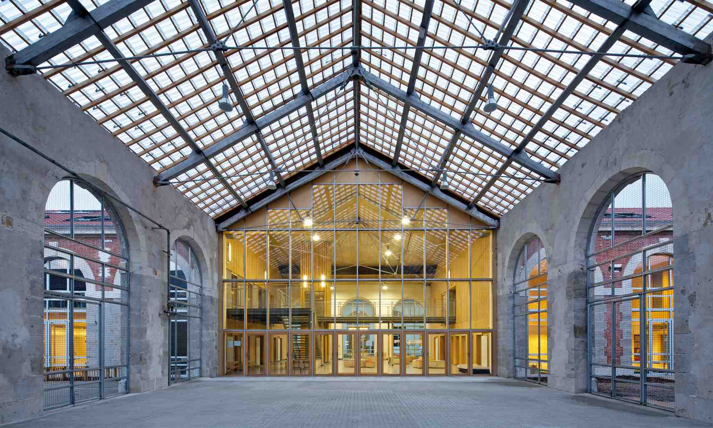

Survolez l'image et agrandissez/réduisez la vue à l'aide de la molette.
Budget: 3 390 000 € HT
Surface SHON: 3000 m²
Date début: 2012
Date fin: 2014
Maîtrise d'ouvrage: Etablissement Public d'Aménagement de Saint-Etienne (EPASE)
Co-traitant(s): bureau des paysages
Description:
Les bâtiments de la Manufacture occupent une place essentielle à la fois pour le témoignage qu’ils livrent
sur l’histoire industrielle de la ville et pour leur situation urbaine en rotule entre la ville constituée,
le centre-ville et la Plaine Achille dédiée désormais aux grands équipements de sports et de loisirs.
Afin d’anticiper le développement du quartier et l’arrivée d’une nouvelle population, il a été décidé
de réaliser une structure d’accueil pour la petite enfance qui remplacerait le groupe scolaire Jules Janin.
Il est constitué de 13 classes réparties en 5 classes de maternelle et 8 classes
d’élémentaire avec une certaine flexibilité dans l’attribution des classes pour répondre à l’accroissement
démographique prévisible du quartier. Il occupe 21 trames du bâtiment. Les passages situés de part
et d’autre occupent chacun une trame.
Le groupe scolaire bénéficie des capacités du volume de la Manufacture afin de créer un lieu unique,
singulier et confortable. Pour cela, il se compose de volumes indépendants qui “se glissent”
dans le volume sur le principe de “boîtes dans la boîte”. Ce sont quatre pavillons de deux niveaux reliés
entre eux par des passerelles à l’étage qui traversent le volume traité comme un abri. Cet espace est
isolé en toiture afin d’assurer une température minimale. Au sol, on retrouve, entre chaque pavillon,
des espaces libres, à la fois circulation et préau, espace de détente et de regroupement, qui se prolongent
naturellement avec les cours extérieures.
Les pavillons sont éclairés naturellement par leurs fenêtres donnant sur l’extérieur mais aussi
sur le volume intérieur. Afin de compléter cet éclairage naturel à l’étage, des “puits de lumière”
viennent la chercher sur le versant nord de la toiture par le biais de fenêtres de toit.
{kind=link}
{kind=link}
{kind=link}
{kind=link}